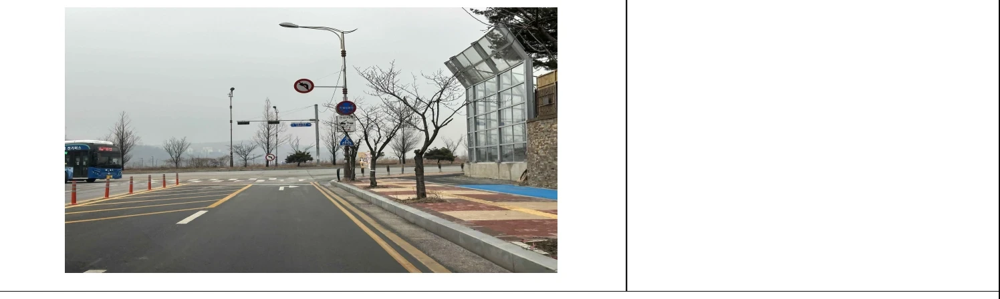

718. Hai biển báo an toàn giao thông nào không thể quan sát được trong tình huống sau?

- ①Biển báo vạch sang đường dành cho người đi bộ
- ②Biển báo cấm rẽ trái
- ③Biển báo vòng xuyến
- ④Biển báo cấm dừng và đỗ xe
- ⑤Biển báo cấm lưu thông
Xem đáp án
Đáp án
③ Biển báo vòng xuyến
⑤ Biển báo cấm lưu thông
Căn cứ
Biển báo giao lộ bùng binh (Quy tắc thi hành luật giao thông đường bộ [Phụ lục 6] Số 109) không có trong ảnh. Biển báo cấm giao thông (Quy tắc thi hành luật giao thông đường bộ [Phụ lục 6] Số sê-ri 201) không có trong ảnh.
Phần căn cứ là bản dịch máy để tham khảo.